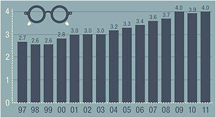
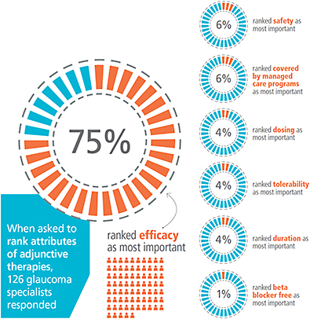

3D visualization may have been made famous by the movie industry, but it’s certainly not staying there. This month, the second 3D product, designed for the OR, was introduced. Sony Electronics’ Medical Systems presented its new high definition camera system at a press conference in New York City. The product, called 3D Simplicity, features two built-in cameras that integrate with OR microscopes to produce 3D video.
It is particularly useful in ophthalmology, notes Richard Mackool, Jr., MD, assistant director at The Mackool Eye Institute and Laser Center, Astoria, N.Y. When he trained in ophthalmology, Dr. Mackool says, books, slides and 2D video were the visual aids. “Phacoemulsification is inherently 3-dimensional, and impossible to realistically display with 2D technology. With 3D technology, anyone can come to the OR and see what the surgeon is seeing in real time.”
“The teaching value of this tool is far beyond anything I’ve seen,” Dr. Mackool says. “For instance, one of the biggest challenges for young surgeons is learning to sculpt and chop the nucleus. With this technology students can learn chopping techniques and appreciate the chamber depth needed for safe phaco. You can’t teach this effectively with a two-dimensional video.”
Sony’s monitor joins TrueVision 3D Surgical’s (Santa Barbara, Calif.) stereoscopic high-definition visualization system, launched in 2008. Pravin U. Dugel, MD, managing partner of Retinal Consultants of Arizona and Clinical Professor of Ophthalmology, Keck School of Medicine, University of Southern California, has been using that system for about four months. It features a “heads-up” display, in which the surgeon wears 3D glasses and looks directly at the monitor while performing surgery, instead of looking through a microscope.
The advantages are considerable, Dr. Dugel believes, both in superior images due to better magnification, and ergonomically, as there’s no hunching over a microscope. In his opinion, though, the greatest advantage high-definition visualization system offers is its ability to create a digitized image.
“It is like having an image on your camera or iPhone, where the image is digitized and you can essentially Photoshop it,” Dr. Dugel explains. “It’s the same with surgery. You can optically stain material, you can import other multimedia, change the color, and by doing that, you may be able to see certain structures better.”
He predicts that a decade from now, digitized images will be the norm in the OR. “The main advantages will be coming down the road.”
Number (in millions) of Adults Ages 18 Years or Older with Diagnosed Diabetes Reporting Visual Impairment, United States, 1997-2011
From 1997 to 2011, the number of adults with diagnosed diabetes who reported visual impairment - trouble seeing even with glasses or contact lenses - rose 2.7 million to 4.0 million
| Year | Millions |
|---|---|
| 1997 | 2.7 |
| 1998 | 2.6 |
| 1999 | 2.6 |
| 2000 | 2.8 |
| 2001 | 3.0 |
| 2002 | 3.0 |
| 2003 | 3.0 |
| 2004 | 3.2 |
| 2005 | 3.3 |
| 2006 | 3.4 |
| 2007 | 3.6 |
| 2008 | 3.7 |
| 2009 | 4.0 |
| 2010 | 3.9 |
| 2011 | 4.0 |
| Sources: Centers for Disease Control and Prevention (CDC), National Center for Health Statistics, Division of Health Interview Statistics, data from the National Health Interview Survey. Data computed by personnel in CDC’s Division of Diabetes Translation, National Center for Chronic Disease Prevention and Health Promotion. | |
| Year | All | White | Black | Hispanic | Other |
|---|---|---|---|---|---|
| 2010 | 7,685,237 | 5,251,907 | 826,102 | 1,194,231 | 412,997 |
| 2030 | 11,350,006 | 6,384,275 | 1,191,481 | 2,939,136 | 835,113 |
| 2050 | 14,559,464 | 6,374,626 | 1,547,724 | 5,254,328 | 1,382,786 |
The AAO’s new patient education materials, debuted at this year’s Academy meeting, were created in an effort to be understood by a greater number of patients. Most of the materials are written at or above a 10th grade reading level with some reaching college reading levels, according to the AAO. Still, nearly half of adults in the United States have trouble understanding health information written above an 8th grade level, according to the Department of Health and Human Services. The new materials were designed with inclusivity in mind.
“We are trying to be proactive in this, and constantly looking for ways to better educate our patients,” says Devin Harrison, MD, chair of the Academy’s patient education committee. “Patients who better understand their disease are more likely to comply with their treatments.”
The changes to the AAO’s fact sheet, handouts, brochures and videos include vocabulary, phrasing and different fonts, which could particularly help patients with low vision. A group heralded by Kierstan Boyd, the Academy’s director of patient education, wrote the materials. She first brought the health literacy issue to the attention of the patient education committee. Physicians then reviewed the material the committee members wrote.
Doctors can do their part in helping to accommodate all patients, too. “In no way should patient-education material take the place of a direct conversation with a patient,” says Dr. Harrison. “We see the educational material as a supplement. In a direct conversation with a patient, a physician can often sense when patients understand what information is conveyed by the questions the patients ask, as well as other cues. A good doctor can sense when a patient is not grasping some important information. He or she may then give the patient some written material, then have the patient return for another conversation.” The entire new line of patient education materials is available for purchase at www.aao.org/store.
QUICK BITS
The U.S. Patent and Trademark Office has granted Iridex Corporation a patent for a new proprietary disposable delivery device, according to a company news release. The disposable delivery device will let ophthalmologists administer Iridex’s proprietary MicroPulse Laser Therapy in a non-invasive way. The device was developed to address a broad range of glaucoma issues. Iridex plans to have the device commercially available in the first quarter of 2015.
Nextech (Tampa, Fla.) has acquired the EHR company MDIntelleSys (Clearwater, Fla). Founded in 2003 by retina specialist Daniel P. Montzka, MD, MDIntelleSys was one of the first cloud-based electronic systems designed for ophthalmology.
Alcon has completed its acquisition of WaveTec Vision, developer of the ORA System, an intra-operative guidance system designed for cataract surgeons who implant IOLs. The system complements Alcon’s Verion image-guided, pre-operative diagnostic system by perform additional measurements. It also lets surgeons see incisions and IOL alignment in real-time.
The FDA has approved use of the Implantable Miniature Telescope for patients 65 years and older who have bilateral, end-stage AMD. The telescope, made by VisionCare Ophthalmic Technologies Inc. (Saratoga, Calif.) is, so far, the only surgical device for end-stage AMD to gain FDA approval.
Be prepared for an audit |
tip of the month |
More than 400,000 providers have participated in meaningful use, equating to more than six billion dollars in payouts, according to CMS. With such a substantial dollar figure, you can be sure audits are taking place.
Auditors will contact the e-mail address the EP used to register for MU, so consider using a generic e-mail address (meaningfuluse@practicename.com) that is always accessible, even if someone leaves your practice.
— Darla Shewmaker, Destinations Consulting and Jeff Grant, HCMA, Inc.
To submit your own practice tip e-mail: william.kekevian@pentavisionmedia.com.
When evaluating attributes of glaucoma adjunctive therapies, 75% of specialists say efficacy is most important, defining efficacy primarily as a reduction in IOP, according to a 2014 M3 Global Research Survey of Glaucoma Specialists, sponsored by Allergan.
And why not the other 25%?
“If you put a patient on a product and the IOP drops tremendously, it’s great for the patient,” says Fiaz Zaman, MD, of Houston Eye Associates.
“But if the [person] can’t tolerate it or [he’s] having a lot of systemic side effects, obviously you’re going to stop it.”
“Lowering the patients’ intraocular pressure has been the number-one risk factor that has shown to be repeatable to stop the disease process or slow it down significantly, so having the efficacy number so high is not surprising,” says Dr. Zaman.
Votes for other characteristics among the 120-plus respondents barely registered a pulse: 6% of respondents each named safety profile and managed care plan coverage, followed by dosing, tolerability and duration, all of which received 4%.
While Dr. Zaman agrees with putting efficacy first, the sizable gap between efficacy and other attributes does not reflect a lack of significance in other factors when prescribing glaucoma therapy, he says. Glaucoma therapies are not one size fits all, he adds.
IRIS registration up to 5,000
About 5,000 American ophthalmologists, or nearly one-third of those in this country, now use the IRIS registry, according to an announcement from the AAO at its annual meeting in Chicago. This means the relatively new registry contains insights from about 10 million patient visits, according to the AAO.
For information about signing up for the IRIS registry, visit www.aao.org/iris-registry/participating.cfm.
“Depending on what stage their disease is in and other comorbidities as far as other systemic diseases, you’re going to implement treatments to keep things from getting worse systemically with their other disease states while giving the most efficacious treatment for that patient.” OM